Storage: pages
Storage
Storage Dies and Drives
The five Storage Die tiers, the four kinds of Storage Drive, how much each holds, the type limit, the fill lights, copies and energy drives as batteries.
On this page
A Storage Drive is where a network keeps what you give it. Each drive holds one kind of resource and comes in five sizes, set by the Storage Die it's built around. A drive does nothing on its own: put it in a drive holder (a  Drive Bay, a
Drive Bay, a  Disk Drive, a NAS or SAN, or a Storage Blade in a Blade Enclosure) on a running network and it becomes part of the network's storage. Every holder takes every kind of drive.
Disk Drive, a NAS or SAN, or a Storage Blade in a Blade Enclosure) on a running network and it becomes part of the network's storage. Every holder takes every kind of drive.
Storage Dies#
The die sets the size. There are five tiers, each four times the one before:
| Die | Bytes | Made from |
|---|---|---|
| 8,192 | The | |
| 32K Storage Die | 32,768 | Four 8K dies, a Logic Die, redstone and Solder Paste |
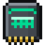 128K Storage Die | 131,072 | Four 32K dies, a Memory Die, Neodymium Ingots and Solder Paste |
| 512K Storage Die | 524,288 | Four 128K dies, a Memory Die, Neodymium Ingots and a Tantalum Capacitor |
| 2,097,152 | Four 512K dies, a Processor Die, Gallium Ingots and a Tantalum Capacitor |
The 8K die comes off the press (see Lithography); every larger one is crafted from four of the tier below:
The four kinds of drive#
| Drive | Holds | Unit |
|---|---|---|
| Storage Drive (8K to 2M) | Items | One item |
| Fluid Storage Drive | Fluids | mB (shown in buckets) |
| Pressurized Storage Drive | Gases | The gas mod's unit (Arcforge's is mB) |
| Energy Storage Drive | FE | FE |
A drive holds only its own kind: items never go onto a Fluid Storage Drive, and fluids never onto a Pressurized one. Each kind is crafted from a die of the size you want:
- Storage Drive: iron, Ferrite, the die and Circuit Substrate. From 128K up, two Tantalum Ingots replace the top iron.
- Fluid Storage Drive: iron, glass, Copper Foil and the die.
- Pressurized Storage Drive: iron, glass, Tantalum Ingots and the die.
- Energy Storage Drive: iron, Tantalum Capacitors and the die.
encodedlogistics:storage_drive_8k
encodedlogistics:fluid_storage_drive_8k
encodedlogistics:pressurized_storage_drive_8k
encodedlogistics:energy_storage_drive_8k
Every tier of every kind:
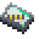
128K Energy Storage Drive,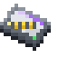
2M Energy Storage Drive,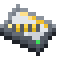
32K Energy Storage Drive,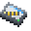
512K Energy Storage Drive, 8K Energy Storage Drive,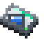
128K Fluid Storage Drive,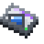
2M Fluid Storage Drive,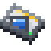
32K Fluid Storage Drive,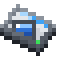
512K Fluid Storage Drive, 8K Fluid Storage Drive,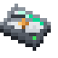
128K Pressurized Storage Drive,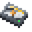
32K Pressurized Storage Drive,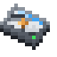
512K Pressurized Storage Drive, 8K Pressurized Storage Drive,Gases need Arcforge
A Pressurized Storage Drive stores the gases of a mod that tells Encoded Logistics about them. Arcforge is the one that does: with it installed, Arcforge's gases go onto Pressurized drives (never onto Fluid drives, even though they're fluids underneath). Without it there is nothing for a Pressurized drive to hold. See Arcforge.
How much a drive holds#
Drives use a byte model. A drive has the die's bytes, and a byte holds:
- 8 items,
- 1,000 mB (a bucket) of fluid,
- 1,000 units of gas (a bucket's worth with Arcforge),
- 1,000 FE.
Every different type stored also reserves a 128th of the drive for itself (64 bytes on an 8K drive), so a drive full of one item holds more than a drive full of many. And a drive holds at most storage.driveTypeLimit (default 63) different types, whatever its size. An Energy Storage Drive has no types: all of its bytes are charge.
What's left for the contents is the drive's bytes, less 1/128 for each type on it:
| Tier | Bytes | Items, one type | Items, total across 63 types | Fluid, one type (buckets) | Energy (FE) |
|---|---|---|---|---|---|
| 8K | 8,192 | 65,024 | 33,280 | 8,128 | 8,192,000 |
| 32K | 32,768 | 260,096 | 133,120 | 32,512 | 32,768,000 |
| 128K | 131,072 | 1,040,384 | 532,480 | 130,048 | 131,072,000 |
| 512K | 524,288 | 4,161,536 | 2,129,920 | 520,192 | 524,288,000 |
| 2M | 2,097,152 | 16,646,144 | 8,519,680 | 2,080,768 | 2,097,152,000 |
The 63-type column is at the default type limit. Gases hold the same as fluids.
A drive is full when either runs out: its bytes, or its types. Once it holds as many types as the limit, it takes more of what it already has but nothing new. The network then puts new things on the next drive with room (see Hot and cold storage for the order).
Fill lights#
Each drive shows a light on its holder's front (a Drive Bay's sled, a NAS or SAN bay), and its fill in its tooltip. The light follows whichever is further along, bytes or types:
| Light | Fill |
|---|---|
| Green | Under 50% |
| Yellow | 50% to 75% |
| Orange | 75% to just under full |
| Red | Full |
The lights go dark while the holder is offline.
An Energy Storage Drive's light shows its charge instead: lit while full, stepping down at 75%, 50% and 25% (amber at a quarter) and dark below that, with a separate charging light while its network is filling it.
Screenshot needed
A Drive Bay front with ten drives of mixed tiers, some green, yellow, orange and one red, and an energy drive charging
docs/site-src/images/storage/drive-lights.png · 1600x900
Where the contents live#
An item, fluid or pressurized drive doesn't carry its contents in the item. The first time it goes into a holder it gets an id, and its contents are kept in the world's save under that id. The item carries only the id and a copy of its fill for its tooltip. So:
- Taking a drive out of its holder keeps everything on it; it's back as soon as the drive goes into a holder again, on this network or another.
- A drive with contents is one of a kind: it stacks to 1.
- A new drive stacks to 64. A drive that's empty again goes back to blank once it's in your inventory, and stacks with new ones.
Copies#
If you copy a drive (a creative middle-click, or Ctrl+pick-block on a holder or rack with drives in it), the copy doesn't share its original's contents. As soon as the mod sees both, the copy gets an id of its own with a copy of what was on the original, and the two go their own ways from then on. The one that's mounted in a holder keeps the original id.
Energy drives as batteries#
An Energy Storage Drive keeps its FE on the item, so it keeps its charge wherever it goes.
- In a drive holder on a network it is part of the network's energy pool, as a Capacitor Bank is: the network fills it and draws from it with no rate limit of its own. See Power for the order the pool fills and drains.
- Out of a holder it's a battery item: anything that charges or draws from FE items (another mod's charger, a machine's battery slot) can use it, at up to
storage.energyDriveMaxTransfer(default 65,536) FE a tick.
An empty, uncharged energy drive in your inventory goes back to blank, as other drives do.